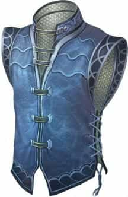
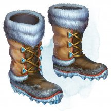
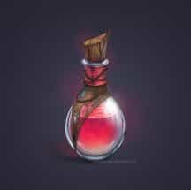
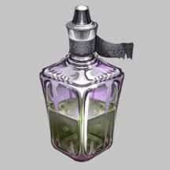
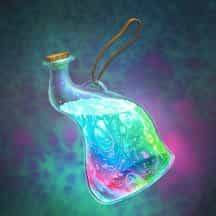
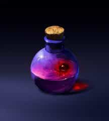
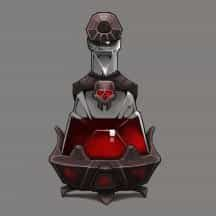

- Оружие, необычное
- Рекомендованная стоимость: 101-500 зм
Это дальнобойное оружие, сделанное из кости грифона, украшено символом элементального воздуха.
Бумеранг имеет дальность броска 60/120 футов, и любое существо, владеющее метательным копьём, также владеет и этим оружием. При попадании бумеранг наносит 1к4 дробящего урона и 3к4 урона звуком. Кроме того, цель должна преуспеть в спасброске Телосложения Сл 10, иначе станет ошеломлённой до конца своего следующего хода. В случае промаха бумеранг возвращается в руку владельца.
После того, как бумеранг нанесёт урон звуком, он теряет способность наносить урон этого типа и ошеломлять цель. Если бумеранг перезарядить внутри стихийного узла воздуха, то к нему возвращаются утраченные свойства. Перезарядка занимает минимум 1 час.
Магические предметы
Официальные материалы от Wizards of the Coast и от издательств, поддерживаемых этой компанией.
- Чудесный предмет, необычный
- Рекомендованная стоимость: 101-500 зм
При получении 3-го ранга головной офис предоставляет вам дорожный алхимический набор - необычный магический предмет, содержащий миниатюрные версии как инструментов алхимика, так и инструментов отравителя (стеклянные флаконы, ступка и пестик, химикаты и стеклянную палочку для размешивания). В рамках этого повышения вы получаете владение инструментами отравителя.
Вы можете использовать этот магический набор до тех пор, пока он у вас находится, без необходимости раскладывать или убирать его. Если вас когда-либо обыскивают, то для того, чтобы найти ваш дорожный алхимический набор, требуется успешная проверка Интеллекта (Расследование) или Мудрости (Проницательность) Сл 20.
- Доспех (любой средний), необычный
- Рекомендованная стоимость: 101-500 зм
Пока вы носите эти доспехи, вы можете бонусным действием заставить броню испускать ядовитые споры, которые заполняют сферу радиусом 10 футов с центром на вас. Каждое существо в этой области должно преуспеть в спасброске Телосложения Сл 15, иначе оно будет отравлено до конца вашего следующего хода. После того, как это свойство будет использовано, его нельзя будет использовать снова до следующего рассвета.
- Доспех (чешуйчатый), необычный
- Рекомендованная стоимость: 101-500 зм
Этот магический доспех сделан из переливающейся чешуи. Пока вы в него облачены, вы можете использовать свой обычный модификатор Ловкости (вместо максимального значения +2) при определении КД. Кроме того, этот доспех не накладывает помеху на ваши проверки Ловкости (Скрытность).

- Доспех (легкий, средний, тяжелый), необычный
- Рекомендованная стоимость: 101-500 зм
Пока вы носите этот доспех, вы обладаете скоростью плавания, равной скорости вашей ходьбы. Кроме того, каждый раз, когда вы начинаете ход, находясь под водой и с 0 хитов, вы поднимаетесь к поверхности на 60 футов. Данный доспех искусно декорирован различными мотивами с изображениями рыб и морских раковин.
- Доспех (лёгкий, средний, тяжёлый), необычный (требуется настройка)
- Рекомендованная стоимость: 101-500 зм
Доспехи имеют 5 зарядов. Пока вы носите эти доспехи, вы можете бонусным действием потратить 1 или несколько зарядов, чтобы наложить из доспехов одно из следующих заклинаний, нацеленных на себя: прыжок [jump] (1 заряд) или левитация [levitate] (2 заряда).
Доспехи восстанавливают 1к4+1 израсходованных зарядов ежедневно на рассвете.
- Доспех (средний, тяжёлый), необычный (требуется настройка)
- Рекомендованная стоимость: 101-500 зм
Пока вы носите эти доспехи, вы можете использовать их для наложения заклинаний разговор с мёртвыми [speak with dead] или восставший труп [animate dead]. Если доспехи использовались для наложения заклинания таким образом, они не смогут использоваться для наложения ни одного из заклинаний до следующего рассвета.
Ваша душа поддерживает эту броню. Если вы умрете, будучи настроенным на доспехи, доспехи будут разрушены.
- Чудесный предмет, необычный (требуется настройка)
- Рекомендованная стоимость: 101-500 зм
Этот сверкающий красный драгоценный камень обычно вставляют в кольцо или брошь.
Нося драгоценный камень, вы получаете следующие преимущества.
Фальшивые монеты. Действием вы можете волшебным образом создать кучу монет общей стоимостью не более 100 зм в незанятом пространстве в пределах 10 футов от себя. Куча должна располагаться на поверхности, способной выдержать ее. Через 1 час монеты исчезают независимо от того, где они находятся. После того, как это действие будет использовано, его нельзя будет использовать снова до следующего рассвета.
Иллюзорная мода. Бонусным действием вы можете волшебным образом изменить внешний вид своей одежды и доспехов. Вы можете изменить стиль, цвет и внешнее качество того, что вы носите, или можете создать впечатление, будто вы носите совершенно другую одежду. В любом случае изменения, вызванные этой магией, не проходят физическую проверку.
- Оружие (дротик), необычное
- Рекомендованная стоимость: 101-500 зм
Этот дротик украшен узорами в виде воздушных спиралей, расположенных по всей его длине.
Перед броском этого дротика вы можете прошептать слово «ищи», и он начнёт лететь по направлению к выбранной вами цели, которая находится в пределах 120 футов. Вы должны знать, как выглядит цель, хотя вам не обязательно видеть её в момент броска. Если цель находится за пределами дальности дротика или к ней нет беспрепятственного пути, дротик падает на землю, а магия исчезает из него. В противном случае, стихия ветра мгновенно направляет дротик прямиком к цели. Дротик может проходить через пространство, шириной в 1 дюйм, и менять направление полёта, огибая углы.
Когда дротик достигает своей цели, та должна преуспеть в спасброске Ловкости Сл 16, иначе получит колющий урон 1к4 и урон электричеством 3к4. После этого из дротика исчезает магия, и он становится обычным оружием.
- Чудесный предмет, необычный
- Рекомендованная стоимость: 101-500 зм
Дымный порох – магическое взрывчатое вещество, прежде всего используется для выталкивания пули из дула огнестрельного оружия. Он хранится в герметичных деревянных бочонках или крошечных, водонепроницаемых кожаных сумках. Хранящегося в сумке дымного пороха достаточно для пяти выстрелов, тогда как в бочонке, дымного пороха хватит на пятьсот выстрелов.
Если поджечь ёмкость с дымным порохом и метнуть её, либо совершить нечто подобное, то она взорвётся и нанесёт урон огнём каждому существу или объекту в пределах 20 футов от себя: 1к6 за сумку и 9к6 за бочонок. Преуспев в спасброске Ловкости Сл 12, вы получите половину урона.
Если наложить на дымный порох заклинание рассеивание магии [dispel magic], он навсегда станет неактивным.
- Жезл, необычный (требуется настройка)
- Рекомендованная стоимость: 101-500 зм
Этот адамантовый жезл увенчан светящимся кристаллическим глазом. Жезл имеет 3 заряда и восстанавливает все свои израсходованные заряды ежедневно на рассвете.
Когда существо, которое вы видите в пределах 60 футов, наносит вам урон, пока вы держите этот жезл, вы можете реакцией израсходовать 1 заряд жезла и заставить существо совершить спасбросок Ловкости Сл 13. Существо получает 2к10 урона электричеством при провале или вдвое меньше урона при успехе.

- Чудесный предмет, необычный (требуется настройка заклинателем)
- Рекомендованная стоимость: 101-500 зм
Если эта жемчужина находится у вас, вы можете действием произнести командное слово и восстановить одну использованную ячейку заклинания. Если уровень потраченной ячейки 4-го или больше, вы получите ячейку 3-го уровня. Вы не можете повторно использовать жемчужину до следующего рассвета.
- Чудесный предмет, необычный (требуется настройка)
- Рекомендованная стоимость: 101-500 зм
В этих симбиотических перчатках из тонкого хитина и сухожилий пульсирует жизнь. Чтобы настроиться на них, вы должны носить их в течение всего периода настройки, пока перчатки врастают в вашу кожу.
Настроившись на эти перчатки, вы приобретаете одно из следующих владений (по вашему выбору, когда вы настраиваетесь на перчатки):
- Ловкость рук;
- Воровские инструменты;
- Один вид ремесленных инструментов по вашему выбору;
- Один вид музыкальных инструментов по вашему выбору.
Когда вы совершаете проверку характеристики, используя выбранное владение, вы добавляете к ней удвоенный Бонус мастерства вместо обычного Бонуса мастерства.
Симбиотическая природа. Перчатки не могут быть сняты с вас, пока вы настроены на них, и вы не можете добровольно окончить свою настройку на них. Если на вас используют заклинание, которое снимает проклятие, то ваша настройка на перчатках заканчивается, и их можно снять.

- Чудесный предмет, необычный (требуется настройка)
- Рекомендованная стоимость: 101-500 зм
Эти меховые сапоги очень плотные и тёплые. Пока вы их носите, вы получаете следующие преимущества:
- Вы получаете сопротивление урону холодом.
- Вы игнорируете труднопроходимую местность, созданную льдом или снегом.
- Вы нормально переносите температуру до -50 °F (-45 °C) без тёплой одежды. Если вы одеты в теплую одежду, то можете переносить температуру до -100 °F (-73 °C).

- Зелье, необычное
- Рекомендованная стоимость: 51-250 зм
После того как вы выпили это зелье, вы можете в течение одного часа неограниченно накладывать заклинание дружба с животными [animal friendship] (Сл спасброска 13). При взбалтывании этой мутной жидкости вы видите рыбью чешую, кошачьи когти, беличью шерсть и прочие фрагменты.
- Зелье, необычное
- Рекомендованная стоимость: 101-500 зм
Выпив это зелье, вы и всё, что вы несёте и носите, приобретёт изменчивый оттенок всевозможных цветов на 1 час. В течение это времени вы можете бонусным действием поменять палитру цветов на любую на ваш выбор. Если вы мимикрируете под оттенки окружающей среды, то они постоянно меняются в соответствии с обстановкой, и вы совершаете проверки Ловкости (Скрытность) с преимуществом, пока не измените цвет или эффект зелья не перестанет действовать.
Зелье расслаивается на семь ярких полос несмешивающихся жидкостей и напоминает на вкус сироп.

- Зелье, необычное
- Рекомендованная стоимость: 51-250 зм
После того, как вы выпили это зелье, вы можете бонусным действием выдохнуть огонь в цель, находящуюся в пределах 30 футов от вас. Цель должна совершить спасбросок Ловкости Сл 13, получая 4к6 урона огнём при провале или половину этого урона при успехе. Эффект оканчивается после того, как вы трижды используете огненное дыхание, или по истечении 1 часа.
Зелье представляет собой оранжевую мерцающую жидкость, над которой стелется дымок, выходящий наружу каждый раз, когда вы откупориваете пробку.

- Зелье, необычное
- Рекомендованная стоимость: 51-250 зм
Вы можете дышать под водой в течение 1 часа после того, как выпьете это зелье. В мутно-зелёной жидкости, пахнущей морем, плавают небольшие пузырьки, похожие на медуз.
- Зелье, необычное
- Рекомендованная стоимость: 101-500 зм
Когда вы выпиваете это зелье, вы получаете преимущество на одну проверку характеристики, бросок атаки или спасбросок по вашему выбору, которые вы совершаете в течение следующего часа.
Это зелье имеет вид мерцающего золотистого тумана, который движется и струится, как вода.
- Зелье, необычное
- Рекомендованная стоимость: 51-250 зм
Когда вы выпиваете это зелье, в течение 1 часа вы совершаете с преимуществом спасброски, совершаемые для избегания или снятия с себя эффекта очарования или ошеломления.
Это чёрное зелье переливается мерцающими розовыми и фиолетовыми пятнами.
- Зелье, необычное
- Рекомендованная стоимость: 51-250 зм
Когда вы выпиваете это зелье, значение вашей Силы изменяется на один час. Это новое значение равно 21. Зелье не оказывает на вас никакого эффекта в том случае, если значение вашей Силы уже равно этому значению или превосходит его.
В прозрачной жидкости этого зелья плавают обрезки ногтей холмового великана.

- Зелье, необычное
- Рекомендованная стоимость: 51-250 зм
Когда вы выпиваете это зелье, вы на 1 час получаете сопротивление урону одного вида. Мастер сам выбирает вид урона или определяет его случайным образом из приведённых ниже вариантов.
к10 Вид урона 1 Звук 2 Излучение 3 Кислота 4 Некротическая энергия 5 Огонь 6 Психическая энергия 7 Силовое поле 8 Холод 9 Электричество 10 Яд

- Зелье, необычное
- Рекомендованная стоимость: 51-250 зм
Когда вы выпиваете это зелье, вы получаете на 1к4 часа эффект «увеличение» заклинания увеличение/ уменьшение [enlarge/reduce] (концентрация не требуется). Маленький красный шарик в этой жидкости непрерывно расширяется, окрашивая прозрачную жидкость вокруг, и тут же сжимается вновь. Тряска пузырька не прерывает этот процесс.

- Зелье, необычное
- Рекомендованная стоимость: 51-250 зм
Эта смесь выглядит, пахнет и обладает таким же вкусом, что и зелье лечения или другое полезное зелье. Однако, это самый настоящий яд, чья истинная природа скрыта магией иллюзий. Заклинание опознание [identify] раскрывает этот обман.
Если вы всё же выпьете это зелье, вы получаете урон ядом 3к6 и должны преуспеть в спасброске Телосложения Сл 13, иначе станете отравленным. В начале каждого вашего хода, пока вы отравлены этим зельем, вы получаете урон ядом 3к6. В конце каждого своего хода вы можете повторять спасбросок. В случае успеха каждый урон ядом в последующих раундах будет уменьшен на 1к6. Яд прекращает действие, когда его урон станет равным нулю.
- Чудесный предмет, необычный
- Рекомендованная стоимость: 101-500 зм
Этот свисток вырезан из прозрачного кристалла, и напоминает крошечного дракона, свернувшегося калачиком, как улитка. Название «Зовущий в ночи» выгравировано на свистке дварфийскими рунами. Если персонаж успешно совершает проверку Интеллекта (Магия или История) Сл 20, то может вспомнить информацию, о том, что в далёком прошлом дуэргары сделали несколько таких свистков.
Если вы подуете в этот свисток в темноте или под ночным небом, то получите возможность наложить заклинание восставший труп [animate dead]. Цель может находится под 10 футами мягкой земли или аналогичного материала, и если это так, то требуется 1 минута, чтобы призванная нежить смогла пробиться на поверхность, для служения вам. После того, как с помощью свистка было наложено заклинание «Восставший труп», вы не может сделать это снова, пока не пройдет 7 дней.
Раз в 24 часа вы можете дунуть в свисток, чтобы восстановить контроль над одним или двумя существами, которых вы оживили с его помощью.